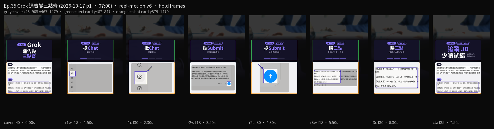

法團 WhatsApp 長通告搵唔到停水同維修日。第35集用 Grok（xAI，grok.com 對話）：撳 Chat 開新對話，將通告貼入去，撳 Submit，睇返三點。示範結果係【外牆維修】／【更換水泵】／【業主大會】，日期用【】標好。示範屋苑叫「星河花園」，通告同電話純屬虛構。
Reel 一句講晒：Grok｜通告變／三點齊
你會學到
- 點樣撳左側鉛筆掣 Chat，開一條新對話
- 點樣將屋苑通告貼入輸入框，撳藍色向上箭頭 Submit
- 點樣睇三點，同埋轉發之前要向管理處核實日期
開始前準備
- 瀏覽器開 grok.com。登入同用量以你當日畫面為準
- 一則法團或者管理處 WhatsApp 長通告。示範用虛構「星河花園」，電話同日期都唔好當真實安排
- 通告有住戶姓名、單位或者真實電話，貼之前先刪走。撳 Submit 之後，段字會交俾 Grok 處理

3 步做法
-
撳 Chat：開 grok.com，撳左側鉛筆掣 Chat，開一條新對話。本集第一步跟 tooltip 名 Chat，唔好留喺舊對話度改。
-
撳 Submit：將屋苑通告貼入輸入框，撳藍色向上箭頭 Submit 送出。示範通告係虛構「星河花園」。有住戶姓名、單位或者真實電話，貼之前先刪走。
-
睇三點：等 Grok 整理成【外牆維修】／【更換水泵】／【業主大會】三點。日期用【】標好，對完原文先轉發。日期同安排請向管理處核實，AI 可能睇漏或者寫錯。
常見錯誤／注意事項
- 唔核實就轉發：日期、時間、安排逐項對返通告，再向管理處核實。
- 貼真實個人資料：住戶姓名、單位、電話先刪走。示範「星河花園」同電話純屬虛構。
- 當星河花園係真屋苑：示範名。唔好對號入座，亦唔好將示範日期當法團通知。
- 搵唔到 Submit：2026-10-16 畫面送出係藍色向上箭頭，掣名係 Submit。
- 留喺舊對話：第一步撳 Chat 開新對話，先貼今次通告。
示範通告虛構。三點只係方便睇，正式安排以管理處原文為準。
香港用戶留意
用瀏覽器開 grok.com 就得。要認嘅字：Chat、Submit。三點入面嘅日期用【】標出嚟，轉發去屋苑群之前自己對一次。呢頁教你整理通告，唔係叫你轉發呢則片。
官方說明
- Grok（grok.com）
2026-10-16 自錄：左側鉛筆掣叫 Chat，送出係藍色向上箭頭 Submit。登入、用量同介面以你當日畫面為準。營運係 xAI
（grok.com 當日打開。介面可能更新，以官方為準）
原帖
睇原 Reel ↗（2026-10-17 發佈）